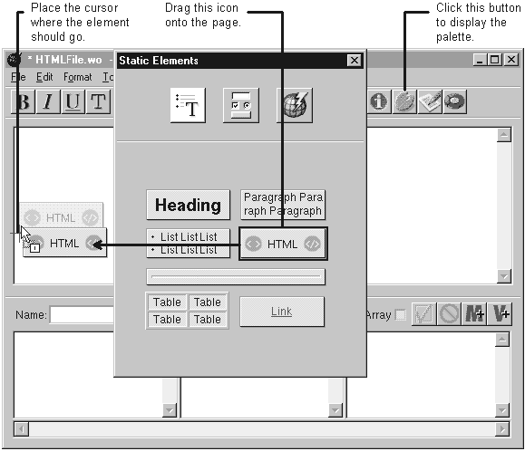
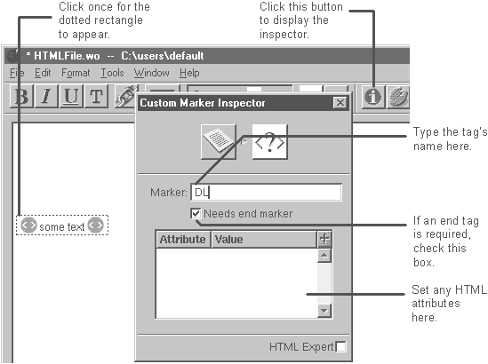

Table of Contents
Table of Contents
 Previous Section
Previous Section
Table of Contents
Previous Section
If there is no palette icon for the HTML marker you want, create a custom marker. "HTML Elements Not on the Static Elements Palette" lists some elements you create with the custom tag.
Place the cursor where you want the element.
In the Static Elements palette, click the custom tag icon and drag it onto the page.
In the inspector window, enter the tag's name.
Return to the component window and enter the text of the element.


A custom tag is an element whose tag name is editable. The default name for custom tags is mymarker. After placing the tag, you change the default to the name of the HTML element you want to create, such as DL. You can also specify whether your custom tag requires an end tag, such as /DL.
Tip: To save the custom tags so you can use it again, create a custom palette.
 Next Section
Next Section